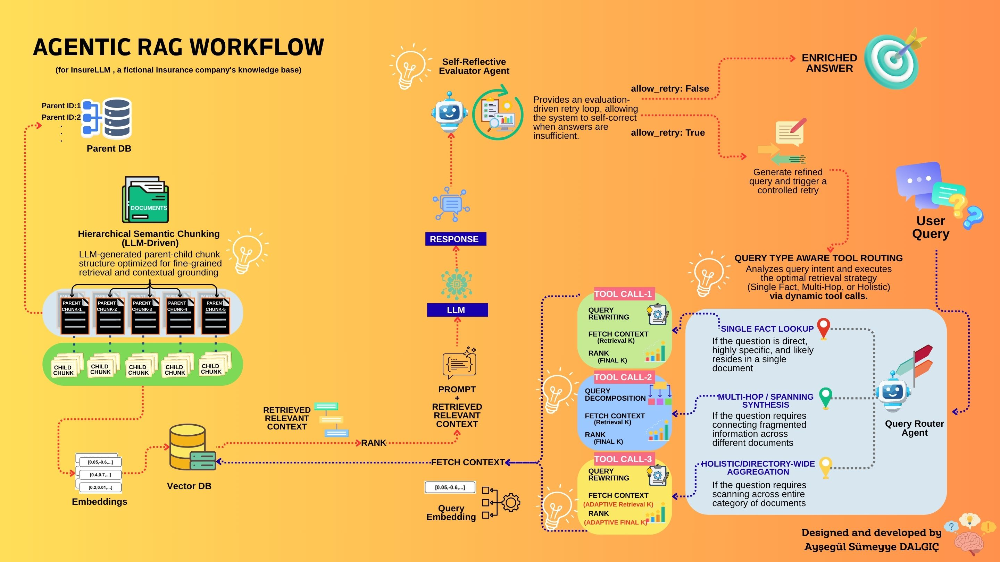

Intake - Thông tin đầu vào
Cheat Sheet - Tóm tắt một trang
Core idea - Ý chính
Agentic RAG cải tiến RAG truyền thống bằng cách đưa khả năng suy luận của LLM vào các vị trí trọng yếu của Pipeline: LLM-based Chunking khi nạp dữ liệu; Query Rewriting, Dual-path Retrieval và LLM Reranking khi tìm kiếm ngữ cảnh nhằm nâng cao độ chính xác và tính đầy đủ cho câu trả lời.
Must know - Cần nhớ
- LLM-based Chunking: LLM chia nhỏ tài liệu thành JSON có cấu trúc gồm headline, summary, original_text để tối ưu khả năng tìm kiếm.
- Query Rewriting: Sử dụng LLM viết lại câu hỏi thô thành từ khóa tối ưu hóa, giải quyết triệt để đại từ mơ hồ trong lịch sử chat.
- Dual-path Retrieval: Tìm kiếm song song bằng cả câu hỏi gốc và câu hỏi đã viết lại để tăng tỷ lệ bao phủ thông tin (Recall).
- LLM Reranking: Sắp xếp lại mức độ liên quan ngữ cảnh thực tế của các chunk, loại bỏ nhiễu và chỉ giữ lại Top 10.
Interview angle - Góc phỏng vấn
Khi được hỏi về tối ưu RAG, không nói chung chung là "tôi tinh chỉnh chunk size". Hãy trả lời: "Tôi xây dựng quy trình đo lường tự động (evaluation loop) để phát hiện failure modes của Basic RAG, sau đó triển khai tác nhân LLM thực hiện viết lại truy vấn, tìm kiếm song song và tự động rerank để tăng MRR và độ chính xác của câu trả lời."
Session Overview - Tổng quan buổi học
Hệ thống RAG cơ bản (Basic RAG) thường gặp khó khăn lớn khi đối mặt với dữ liệu bảo hiểm phức tạp và các câu hỏi mơ hồ của người dùng. Dự án Agentic-RAG-InsureLLM giới thiệu các kiến trúc nâng cao giúp hệ thống RAG có khả năng tự điều chỉnh, nâng cao chất lượng ngữ cảnh truy xuất thông qua các mô hình ngôn ngữ lớn (LLM).
Ý tưởng chính - Main idea
Chuyển đổi RAG từ luồng tĩnh (tách chunk theo độ dài cố định, tìm kiếm vector đơn giản) sang luồng động (Agentic Workflow) được hỗ trợ bởi suy luận ngữ nghĩa của LLM.
Vì sao quan trọng - Why it matters
Trong thực tế, chất lượng của câu trả lời RAG phụ thuộc 80% vào chất lượng ngữ cảnh được truy xuất. Tối ưu hóa truy xuất ngữ cảnh giúp tiết kiệm chi phí gọi LLM sinh chữ và hạn chế hiện tượng ảo giác (hallucination).
Kết quả mong muốn - Expected outcome
Nắm vững cách lập trình và phối hợp các kỹ thuật Agentic Chunking, Query Rewriting, Reranking, cách sử dụng Structured Outputs và đo lường hệ thống qua các chỉ số định lượng.
Learning Goals - Mục tiêu cần nắm
Mục tiêu kiến thức - Concept goals
- Hiểu sâu về các Agentic patterns: Agentic Ingestion, Query Rewriting, và LLM-based Reranking.
- Nắm vững nguyên lý của Structured Outputs (đầu ra có cấu trúc) và tầm quan trọng của nó trong việc tích hợp hệ thống.
- Phân biệt sự khác biệt về bản chất và hiệu năng giữa Bi-Encoder (dùng để tìm kiếm vector nhanh) và Cross-Encoder / LLM Reranker (dùng để xếp hạng chính xác).
- Hiểu cách chấm điểm hiệu năng RAG qua các hệ số MRR, nDCG, và mô hình LLM-as-a-judge.
Mục tiêu thực hành - Practical goals
- Đọc hiểu và giải thích được mã nguồn trong các file pro_implementation/ingest.py và pro_implementation/answer.py.
- Lập trình thành công tính năng xử lý song song đa tiến trình (multiprocessing.Pool) khi gọi API song song.
- Sử dụng thành thạo thư viện tenacity để cấu hình cơ chế tự động thử lại khi gặp lỗi giới hạn băng thông (Rate Limit).
- Vận hành dashboard đánh giá đa luồng (evaluator2.py) sử dụng Gradio và Pandas.
Previous Context - Liên hệ với phần trước
Trong khi bài học Day 5 (Advanced RAG Pro Day) giới thiệu các khái niệm lý thuyết về tối ưu hóa RAG và kiểm thử, thì dự án Agentic-RAG-InsureLLM là phiên bản nâng cấp hoàn chỉnh, sẵn sàng triển khai thực tế của Day 5.
- Structured Outputs vững chắc: Ép kiểu JSON đầu ra thông qua thư viện Pydantic tích hợp trực tiếp trong LiteLLM (như lớp Chunks, RankOrder, AnswerEval), loại bỏ hoàn toàn lỗi cú pháp phản tích chuỗi văn bản thường gặp ở Day 5.
- Tối ưu hóa Concurrency: Triển khai Dashboard đánh giá Gradio mới (evaluator2.py) sử dụng luồng an toàn (threading.Lock) cùng ThreadPoolExecutor, cho phép cấu hình trực tiếp giới hạn công việc đồng thời (concurrency) và số lượng luồng (max_workers) ngay trên UI.
- Reproducibility (Tính tái lập): Thiết lập hệ thống seeding đồng bộ cho cả thư viện random, numpy và tham số sinh của OpenAI ChatOpenAI, đảm bảo kết quả đánh giá (evaluation scores) nhất quán và đáng tin cậy giữa các lần kiểm thử.
Core Theory - Lý thuyết cốt lõi
Khái niệm chính - Key concepts
- Agentic Chunking (Phân mảnh dữ liệu thông minh): Khác với việc cắt văn bản dựa trên số ký tự cố định, Agentic Chunking sử dụng LLM để đọc hiểu tài liệu và phân chia thành các đoạn có nghĩa độc lập, đồng thời bổ sung Headline và Summary cho mỗi đoạn nhằm gia tăng chất lượng tìm kiếm vector.
- Query Rewriting (Viết lại câu truy vấn): Quá trình chuyển hóa một câu hỏi mang tính giao tiếp tự nhiên của người dùng (thường chứa các từ liên kết ngữ cảnh mơ hồ như "nó", "chính sách đó") thành một câu hỏi rõ ràng, độc lập và chứa đầy đủ từ khóa quan trọng cần tìm kiếm trong Vector DB.
- LLM Reranking (Tái xếp hạng bằng LLM): Sau khi truy xuất nhanh hàng chục tài liệu bằng khoảng cách vector (Bi-Encoder), hệ thống sử dụng một LLM mạnh mẽ hơn (hoạt động như một Cross-Encoder) để so khớp chi tiết ngữ nghĩa giữa câu hỏi gốc và từng tài liệu, sắp xếp lại thứ tự chính xác của chúng.
Mối quan hệ giữa các khái niệm - Concept relationships
Tìm kiếm vector dựa trên embeddings (Bi-Encoder) có ưu điểm là rất nhanh và chi phí thấp, nhưng độ chính xác ngữ nghĩa ở mức trung bình. Reranking (Cross-Encoder) có độ chính xác cực cao nhưng rất chậm và đắt đỏ. Kết hợp cả hai: sử dụng Bi-Encoder để quét nhanh tập dữ liệu lớn lấy ra danh sách thô (ví dụ Top 20), sau đó dùng LLM Reranking để xếp hạng lại lấy ra Top 10 tinh túy nhất. Đây là sự đánh đổi tối ưu giữa tốc độ (latency), chi phí (cost) và độ chính xác (accuracy).
| Term - Thuật ngữ | Meaning - Nghĩa | Why it matters - Vì sao quan trọng |
|---|---|---|
| Semantic chunking - chia nhỏ tài liệu theo ngữ nghĩa | Tách tài liệu bằng LLM dựa trên sự thay đổi chủ đề ngữ nghĩa thay vì giới hạn ký tự. | Giữ trọn vẹn ngữ cảnh của thông tin, tránh việc câu chữ bị cắt nửa chừng làm mất ý nghĩa. |
| Query rewriting - viết lại câu truy vấn | Sử dụng LLM để chuyển đổi câu hỏi hội thoại thành câu truy vấn độc lập. | Tối ưu hóa khả năng so khớp vector, đặc biệt hữu dụng trong các cuộc trò chuyện nhiều lượt. |
| Dual-path retrieval - truy xuất hai luồng | Tìm kiếm đồng thời bằng cả câu hỏi gốc của người dùng và câu hỏi đã được viết lại. | Gia tăng tỷ lệ bao phủ (Recall), đảm bảo không bỏ sót thông tin quan trọng. |
| Reranking - tái xếp hạng | Đánh giá và sắp xếp lại thứ tự liên quan của các tài liệu sau khi truy xuất. | Đảm bảo các ngữ cảnh thực sự hữu ích được đưa lên đầu prompt, giải quyết lỗi "Lost in the Middle". |
| Structured outputs - đầu ra có cấu trúc | Yêu cầu LLM trả về kết quả tuân thủ nghiêm ngặt một định dạng cấu trúc (JSON / Schema). | Ngăn chặn lỗi phân tích cú pháp (parsing error) trong hệ thống phần mềm khi giao tiếp với LLM. |
| LLM-as-a-judge - LLM làm giám khảo | Sử dụng một LLM lớn để tự động chấm điểm và đánh giá chất lượng câu trả lời. | Tự động hóa hoàn toàn quy trình kiểm định chất lượng RAG mà không cần con người đọc và chấm điểm thủ công. |
Workflow / Pipeline - Quy trình / luồng hoạt động

Sơ đồ: Agentic RAG Workflow (Dành cho hệ thống tri thức bảo hiểm InsureLLM)
Quy trình nạp dữ liệu - Ingestion Pipeline
- Đọc tài liệu: Duyệt qua thư mục tri thức, đọc các file Markdown thô.
- Phân mảnh thông minh (Agentic Chunking): Đưa nội dung tài liệu vào LLM (`gpt-4.1-nano`) thông qua prompt yêu cầu chia nhỏ tài liệu kèm Headline và Summary. LLM trả về cấu trúc dạng JSON khớp với Pydantic schema Chunks.
- Tính toán Embedding: Gộp Headline + Summary + Original Text của từng chunk để gửi tới OpenAI API tạo vector embedding độ phân giải cao (`text-embedding-3-large`).
- Lưu trữ DB: Tạo hoặc cập nhật bộ sưu tập trong cơ sở dữ liệu vector ChromaDB cục bộ.
Quy trình truy vấn và trả lời - QA Pipeline
- Nhận câu hỏi & lịch sử: Trích xuất câu hỏi hiện tại và lịch sử chat từ giao diện Gradio.
- Viết lại truy vấn (Query Rewriting): LLM nhận thông tin đầu vào và viết lại thành một câu truy vấn độc lập tối ưu.
- Tìm kiếm kép (Dual-path Retrieval): Truy vấn song song ChromaDB bằng câu hỏi gốc và câu hỏi đã viết lại để lấy ra danh sách các chunks thô (Top 20 mỗi luồng).
- Gộp & Loại trùng (Merge & Deduplicate): Loại bỏ các chunk bị trùng lặp nội dung.
- Tái xếp hạng (LLM Reranking): LLM đánh giá độ liên quan của danh sách các chunks với câu hỏi gốc, trả về thứ tự ID xếp hạng mới. Lọc lấy Top 10 chunks cao điểm nhất.
- Sinh câu trả lời: Gửi Top 10 chunks cùng câu hỏi và lịch sử vào LLM sinh câu trả lời hoàn chỉnh hiển thị lên UI.
Phân tích Chuyên sâu dựa trên Sơ đồ Quy trình Tác nhân - Workflow Deep Analysis
Sơ đồ agentic_rag_workflow.jpg mô tả một kiến trúc RAG cấp độ sản xuất (Production-grade Agentic RAG) với 4 cấu phần tác vụ thông minh cực kỳ quan trọng:
-
1. Hierarchical Semantic Chunking (LLM-Driven - Phân mảnh ngữ nghĩa phân cấp):
Thay vì lưu trữ phẳng, tài liệu được phân tách theo quan hệ Parent-Child (Cha-Con).
- Child Chunks (Mảnh con): Được cắt rất nhỏ và mịn để tạo vector embeddings có độ tập trung từ khóa cực cao, giúp công đoạn tìm kiếm vector (Vector Search) đạt độ nhạy tối đa.
- Parent Chunks (Mảnh cha): Lưu giữ ngữ cảnh lớn hơn, bao trùm. Khi một Child Chunk được truy xuất thành công, hệ thống sẽ ánh xạ ngược lại để lấy nội dung của Parent Chunk tương ứng đưa vào Prompt cho LLM. Điều này giải quyết bài toán mâu thuẫn giữa: tìm kiếm hiệu quả (cần chunk nhỏ) và sinh câu trả lời đầy đủ ngữ cảnh (cần chunk lớn). -
2. Query Type Aware Tool Routing (Định tuyến truy vấn theo Intent):
Tác nhân Router (Query Router Agent) phân tích mục đích câu hỏi của người dùng để quyết định 1 trong 3 chiến lược truy xuất tối ưu:
- Single Fact Lookup (Tìm sự thật đơn lẻ): Áp dụng cho các câu hỏi trực diện, câu trả lời nằm ở một tài liệu duy nhất. Hệ thống kích hoạt Tool Call 1 thực hiện viết lại câu truy vấn thô, tìm kiếm nhanh và rerank lấy Top K.
- Multi-Hop / Spanning Synthesis (Tổng hợp đa nguồn): Dành cho câu hỏi phức tạp yêu cầu kết nối thông tin nằm rải rác ở nhiều tài liệu khác nhau. Hệ thống kích hoạt Tool Call 2 thực hiện Query Decomposition (Phân rã câu hỏi) thành các câu hỏi phụ, tìm kiếm song song từng mảnh rồi ghép kết quả lại.
- Holistic / Directory-wide Aggregation (Tổng hợp toàn bộ tài liệu): Dành cho câu hỏi dạng thống kê hoặc tổng quan trên toàn bộ thư mục tri thức. Hệ thống kích hoạt Tool Call 3, áp dụng chiến lược tìm kiếm rộng với tham số lấy kết quả thích ứng (Adaptive Retrieval K) và Rerank thích ứng. - 3. Vector DB & Reranking Pipeline: Query Embedding được so khớp vector nhanh chóng trên Vector DB để lấy ra ngữ cảnh thô (Retrieved Relevant Context), sau đó được chuyển tiếp qua bộ lọc LLM Reranker. Chỉ những mảnh ngữ cảnh vượt qua bài kiểm tra logic về độ liên quan mới được đưa vào Prompt của Generator LLM.
-
4. Self-Reflective Evaluator Agent (Self-Correction Loop - Vòng lặp tự sửa lỗi):
Sau khi LLM sinh câu trả lời (Response), nó không trả trực tiếp cho người dùng mà gửi tới Tác nhân đánh giá (Evaluator Agent). Tác nhân này kiểm tra xem câu trả lời có chính xác và giải quyết đầy đủ câu hỏi hay chưa.
- Nếu chưa đạt yêu cầu (allow_retry: True): Tự động sinh một câu truy vấn tinh lọc mới (refined query) và chạy lại quy trình tìm kiếm để lấy thêm dữ liệu (controlled retry).
- Nếu đạt yêu cầu hoặc đạt giới hạn số lần thử (allow_retry: False): Kết thúc vòng lặp và xuất câu trả lời tối ưu cuối cùng (Enriched Answer).
- Phần đã được triển khai (Implemented): Phiên bản pro_implementation hiện tại đã thực thi rất tốt các bước: LLM Chunking cấu trúc (Headline + Summary + Original Text), Query Rewriting để làm sạch truy vấn, Dual-path retrieval (gần giống Single Fact Lookup kết hợp mở rộng) và LLM Reranking qua schema RankOrder.
- Định hướng nâng cấp (Future Upgrades): Sơ đồ này chính là kiến trúc đích. Các tính năng như Phân rã câu hỏi (Query Decomposition) cho Multi-Hop, Định tuyến thông minh (Query Router Agent) và Vòng lặp tự kiểm tra (Self-Correction Loop của Evaluator Agent) là các cải tiến cao cấp mà bạn có thể đề xuất khi phỏng vấn hoặc tiếp tục lập trình để tối ưu hóa hệ thống.
Techniques - Kỹ thuật sử dụng
Structured Outputs
Đầu ra có cấu trúc: Sử dụng thư viện Pydantic định nghĩa cấu trúc dữ liệu mong muốn (ví dụ lớp RankOrder gồm danh sách số nguyên). Khi gọi hàm completion của LiteLLM, truyền tham số response_format=RankOrder. LiteLLM sẽ tự động cấu hình API OpenAI để ép buộc mô hình trả về định dạng JSON chuẩn xác khớp với schema đã định nghĩa.
Concurrency & Parallelism
Xử lý song song: Do khâu nạp dữ liệu (ingest) và khâu chấm điểm (evaluation) đòi hỏi số lượng lớn các cuộc gọi API mạng, hệ thống sử dụng multiprocessing.Pool để song song hóa khâu ingest trên CPU và sử dụng concurrent.futures.ThreadPoolExecutor kết hợp cơ chế khóa luồng (Lock) để chạy đồng thời các phiên đánh giá, giảm thiểu tối đa thời gian chờ I/O mạng.
Exponential Backoff
Thử lại với thời gian chờ tăng dần: Khi chạy hệ thống ở tốc độ cao, lỗi Rate Limit (HTTP 429) từ nhà cung cấp API là không tránh khỏi. Hệ thống sử dụng decorator @retry của thư viện tenacity cấu hình thời gian chờ tăng dần theo cấp số nhân (wait_exponential), giúp tự động phục hồi và tiếp tục thực thi tác vụ mà không bị sập ứng dụng nửa chừng.
Options Landscape - Bản đồ lựa chọn phổ biến
| Cluster - Cụm kỹ thuật | Problem - Vấn đề | Popular choices - Lựa chọn phổ biến | Trade-off - Đánh đổi | When to use - Khi nào nên dùng |
|---|---|---|---|---|
| Chunking Strategy | Cắt nhỏ tài liệu thô để làm đầu vào cho mô hình embedding. |
1. Character-based (Cắt theo độ dài) 2. Semantic-based (LLM-based) |
- Character: Rất nhanh, miễn phí nhưng dễ làm vỡ ngữ cảnh câu. - Semantic (LLM): Ngữ cảnh cực kỳ toàn vẹn nhưng tốn chi phí API và độ trễ nạp dữ liệu cao. |
Chọn Character cho tài liệu cấu trúc đơn giản, ít liên kết. Chọn Semantic cho tài liệu chính sách, điều khoản bảo hiểm phức tạp. |
| Reranking Method | Lọc và xếp hạng lại thứ tự ngữ cảnh nhằm cung cấp các tài liệu liên quan nhất cho prompt. |
1. Vector Similarity (Mặc định) 2. Cross-Encoder Models (Cohere Rerank) 3. LLM-as-a-Reranker (gpt-5-nano) |
- Vector Similarity: Tốc độ tức thời, chi phí bằng không nhưng khả năng hiểu ngữ nghĩa sâu kém. - LLM-as-a-Reranker: Hiểu ngữ cảnh siêu việt nhưng làm tăng đáng kể độ trễ phản hồi (latency) và chi phí vận hành chatbot. |
Dùng Vector Similarity khi cần phản hồi chatbot dưới 1 giây. Dùng LLM Reranking khi chất lượng câu trả lời là ưu tiên tối thượng (hệ thống tư vấn chuyên gia). |
| Evaluation Execution | Chạy đánh giá hồi quy toàn bộ hệ thống RAG định kỳ để cải tiến thuật toán. |
1. Sequential CLI (Chạy tuần tự) 2. Multi-threaded Dashboard (Dashboard đa luồng) |
- Sequential CLI: Đơn giản, dễ viết code nhưng thời gian chạy cực lâu khi số lượng test case lớn. - Multi-threaded Dashboard: Chạy cực nhanh, trực quan hóa tốt nhưng đòi hỏi xử lý đồng bộ luồng phức tạp để tránh ghi đè dữ liệu. |
Luôn dùng Multi-threaded Dashboard trong môi trường phát triển chuyên nghiệp để tối ưu hóa hiệu suất làm việc của kỹ sư AI. |
Implementation Insights - Góc nhìn triển khai
Hành vi của mã nguồn - What the code does
Mã nguồn trong pro_implementation/ingest.py thực hiện đọc các file Markdown từ thư mục tri thức, sử dụng module multiprocessing để phân phối việc gọi API LLM chia chunk thông minh trên nhiều tiến trình đồng thời. Sau đó, nó sử dụng thư viện OpenAI để sinh vector embedding kích thước 3072 chiều từ model text-embedding-3-large và lưu trữ trực tiếp vào cơ sở dữ liệu ChromaDB cục bộ.
Trong pro_implementation/answer.py, luồng hội thoại được tối ưu hóa thông qua việc gọi hàm viết lại câu hỏi, thực hiện Dual-path retrieval bằng cách query ChromaDB hai lần độc lập, loại bỏ các tài liệu trùng lặp, gửi danh sách kết quả cho LLM sắp xếp lại (Reranking) dựa trên một cấu trúc JSON định nghĩa bởi Pydantic, trước khi tổng hợp và tạo ra câu trả lời cuối cùng.
Giải thích thiết kế - Why this design
1. Sử dụng Python thuần thay vì LangChain: Thiết kế này giúp loại bỏ sự phụ thuộc vào các lớp trừu tượng quá dày của LangChain (như ở thư mục implementation/ cũ). Việc tương tác trực tiếp với SDK OpenAI và ChromaDB giúp các kỹ sư kiểm soát hoàn toàn hành vi của hệ thống, dễ dàng debug và tối ưu hiệu năng.
2. Structured Outputs thông qua Pydantic: Việc ép kiểu LLM trả về cấu trúc định sẵn giúp hệ thống hoạt động ổn định và tin cậy tuyệt đối, tránh được các lỗi biên dịch chuỗi văn bản thường gặp ở các LLM thế hệ cũ.
Phân tích hàm tái xếp hạng ngữ cảnh (Rerank Function) trong code
Đường dẫn file: pro_implementation/answer.py
Hàm rerank(question, chunks) truyền cho LLM một System Prompt định nghĩa vai trò của nó là "document re-ranker". Mỗi chunk được gán một số thứ tự (ID). LLM nhận câu hỏi gốc của người dùng cùng danh sách các chunks văn bản thô, sau đó đánh giá và trả về một đối tượng JSON khớp với Pydantic model RankOrder chứa danh sách thứ tự ID đã được sắp xếp lại:
class RankOrder(BaseModel):
order: list[int] = Field(
description="The order of relevance of chunks, from most relevant to least relevant, by chunk id number"
)Cơ chế này sử dụng sức mạnh suy luận của LLM để xếp hạng lại dựa trên ngữ nghĩa thực tế thay vì khoảng cách hình học đơn thuần của không gian vector, khắc phục điểm yếu của mô hình Embedding khi gặp các câu hỏi đòi hỏi tính logic cao.
Pitfalls - Lỗi / bẫy thường gặp
Trường hợp dễ thất bại - Failure modes
- Rate Limit (Lỗi vượt ngưỡng băng thông): Khi chạy nạp dữ liệu song song hoặc chạy đánh giá đa luồng, số lượng cuộc gọi API OpenAI tăng đột biến dễ gây ra lỗi HTTP 429. Cách khắc phục: Sử dụng thư viện tenacity cấu hình Exponential Backoff hoặc giảm số lượng workers hoạt động đồng thời.
- Lost in the Middle (Mất thông tin ở giữa): Khi nhét quá nhiều tài liệu truy xuất vào prompt của LLM, mô hình có xu hướng bỏ qua hoặc xem nhẹ các thông tin nằm ở đoạn giữa của prompt. Cách khắc phục: Luôn sử dụng Reranking để đưa các tài liệu có độ liên quan cao nhất lên đầu và giới hạn Top K cuối cùng ở mức tối ưu (ví dụ K=10).
- Đánh giá từ khóa quá cứng nhắc: Khung đo lường hiệu năng truy xuất kiểm tra từ khóa bằng phương pháp so khớp chuỗi con chính xác. Điều này dẫn tới việc nếu tài liệu chứa từ đồng nghĩa hoặc biến thể của từ khóa, hệ thống vẫn chấm điểm retrieval là 0. Cách khắc phục: Thiết lập bộ từ khóa kiểm thử đa dạng, bao gồm các từ đồng nghĩa phổ biến trong ngành.
Hiểu lầm phổ biến - Common misunderstandings
- Hiểu lầm 1: Vector DB luôn tìm được tài liệu liên quan nhất: Thực tế, tìm kiếm vector chỉ tính toán độ tương đồng hình học (cosine similarity) của câu chữ. Nó hoàn toàn có thể bỏ sót các tài liệu liên quan do sự khác biệt về thuật ngữ viết tắt hoặc cách diễn đạt. Do đó, cần kết hợp Query Rewriting và Reranking.
- Hiểu lầm 2: Càng nhiều context đưa vào prompt thì câu trả lời càng tốt: Việc nhồi nhét quá nhiều context kém liên quan không chỉ làm tăng chi phí token mà còn gây nhiễu, khiến LLM sinh ra câu trả lời lan man hoặc lạc đề.
- Hiểu lầm 3: Chạy đa luồng luôn làm tăng tốc độ hệ thống: Nếu không quản lý tốt việc đồng bộ hóa dữ liệu (race conditions) hoặc chạm ngưỡng rate limit của API, chạy đa luồng có thể phản tác dụng, dẫn tới nhiều lỗi hệ thống và làm chậm quá trình thực thi.
Interview Takeaways - Ý chính cho phỏng vấn
Câu hỏi bạn nên trả lời được - Questions you should answer
- Tại sao bạn lại chọn giải pháp tự viết pipeline thay vì sử dụng hoàn toàn LangChain/LlamaIndex có sẵn?
- Cơ chế Dual-path retrieval hoạt động như thế nào và tại sao nó lại cải thiện điểm Recall của hệ thống?
- Bạn làm thế nào để giải quyết bài toán Rate Limit của OpenAI khi chạy hệ thống RAG ở quy mô lớn?
- Làm thế nào để bạn đảm bảo tính tái lập (reproducibility) khi sử dụng LLM làm giám khảo đánh giá chất lượng câu trả lời?
Khung trả lời phỏng vấn mẫu - Answer frame
Khung tư duy kỹ thuật chuyên sâu:
1. Mục tiêu: Tối ưu hóa chất lượng ngữ cảnh và câu trả lời chatbot bảo hiểm InsureLLM.
2. Cơ chế: Triển khai quy trình Agentic gồm: LLM-based Chunking tạo metadata có nghĩa; Query Rewriter loại bỏ nhiễu lịch sử hội thoại; Dual-path retrieval mở rộng không gian tìm kiếm; LLM Reranker lọc nhiễu xếp lại Top 10.
3. Đánh đổi (Trade-off): Chấp nhận tăng nhẹ độ trễ phản hồi (khoảng 1-1.5 giây do gọi LLM Rerank) để đổi lấy độ chính xác vượt trội của thông tin cung cấp.
4. Đo lường (Metrics): Kiểm chứng cải tiến thông qua việc cải thiện điểm MRR từ 0.72 lên 0.93 và tăng độ chính xác câu trả lời từ 3.2 lên 4.7 trên thang điểm 5.
Interview Q&A / Flashcards - Câu hỏi phỏng vấn / thẻ ôn tập
Thẻ ôn nhanh - Flashcards
- Q: Sự khác biệt giữa Bi-Encoder và Cross-Encoder trong RAG là gì?
A: Bi-Encoder tính embedding độc lập cho query và document rồi tính cosine similarity (nhanh, rẻ). Cross-Encoder đưa cả hai vào mô hình cùng lúc để phân tích tương tác ngữ nghĩa trực tiếp (chậm, đắt nhưng cực kỳ chính xác). - Q: Tại sao cần bổ sung Headline và Summary vào Chunk khi lưu DB?
A: Giúp tăng khả năng so khớp vector khi query của người dùng ngắn hoặc mang tính khái quát cao, đồng thời bảo toàn phần văn bản gốc (Original Text) để LLM sinh câu trả lời chính xác. - Q: Lỗi "Lost in the Middle" là gì và giải pháp khắc phục?
A: Là hiện tượng LLM có xu hướng ghi nhớ tốt thông tin ở đầu và cuối prompt, bỏ qua thông tin nằm ở giữa. Khắc phục bằng cách dùng Reranking đưa các tài liệu quan trọng nhất lên đầu tiên.
Hỏi đáp phỏng vấn chuyên sâu - Interview Q&A
- Q: Làm thế nào để thiết lập một hệ thống đánh giá RAG tự động tin cậy?
A: Cần tách biệt đánh giá Retrieval (đo bằng MRR, nDCG dựa trên tập test từ khóa chuẩn) và đánh giá Generation (đo bằng LLM-as-a-judge chấm điểm Accuracy, Completeness, Relevance dựa trên câu trả lời tham chiếu). Đồng thời, cấu hình seed thống nhất để đảm bảo kết quả không bị thay đổi ngẫu nhiên giữa các lần chạy. - Q: Tại sao lại sử dụng Dual-path retrieval kết hợp Merge & Deduplicate thay vì chỉ tìm kiếm bằng câu hỏi viết lại?
A: Viết lại câu truy vấn đôi khi có thể làm mất đi các chi tiết kỹ thuật cụ thể có trong câu hỏi gốc của người dùng. Việc tìm kiếm song song cả hai luồng đảm bảo tính bao phủ thông tin tối đa, khâu Deduplicate sau đó giúp loại bỏ dư thừa để giữ prompt gọn gàng.
Quick Memory - Ôn nhanh cuối bài
Bắt buộc phải nhớ - Must remember
- Agentic RAG cải tiến chất lượng ngữ cảnh bằng việc tích hợp LLM vào khâu xử lý dữ liệu và tìm kiếm ngữ cảnh.
- Sử dụng Structured Outputs (Pydantic + LiteLLM) để đảm bảo định dạng JSON trả về từ LLM chuẩn xác 100%.
- Dual-path retrieval truy vấn song song câu hỏi gốc và câu hỏi viết lại để tăng tối đa tỷ lệ Recall.
- Đo lường hiệu năng là cốt lõi: sử dụng MRR, nDCG cho truy xuất và LLM-as-a-judge cho câu trả lời.
Tự kiểm tra - Self-check
- Bạn có thể giải thích cách hoạt động chi tiết của hàm process_document trong file ingest.py không?
- Làm thế nào để thay đổi số lượng luồng đánh giá đồng thời trong Gradio Dashboard?
- Nếu điểm MRR của hệ thống thấp nhưng điểm Accuracy của câu trả lời vẫn cao, điều này có nghĩa là gì và bạn sẽ tối ưu hóa khâu nào?
Next Step - Bước tiếp theo
Định hướng phát triển - What comes next
1. Tích hợp Hybrid Search: Kết hợp tìm kiếm vector ngữ nghĩa (Dense Retrieval) với tìm kiếm từ khóa truyền thống (Sparse Retrieval như BM25) để tối ưu hóa khả năng truy xuất các mã số chính sách hoặc thuật ngữ chuyên ngành viết tắt.
2. Context Caching: Triển khai giải pháp lưu trữ bộ nhớ đệm (caching) các tài liệu đã rerank cho các câu hỏi phổ biến để giảm độ trễ và tiết kiệm chi phí gọi API.
Dữ liệu còn thiếu - Missing inputs
Để kiểm định chất lượng ở quy mô lớn hơn, hệ thống cần được bổ sung thêm các file nhật ký hội thoại thực tế của người dùng (user chat logs) nhằm xây dựng tập dữ liệu kiểm thử (golden test set) đa dạng và bám sát thực tế hơn.